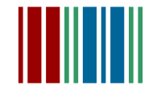
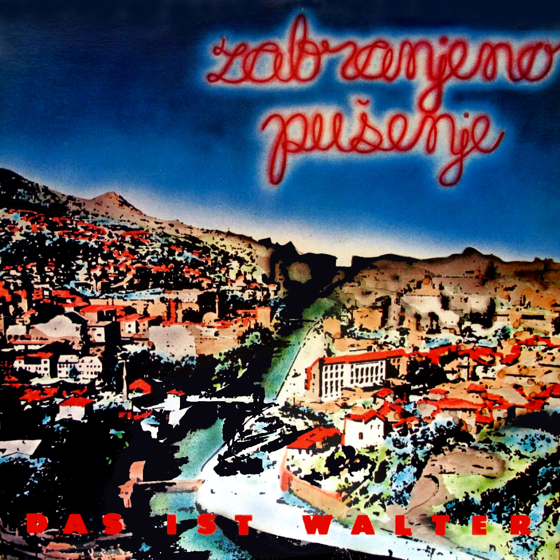

Zabranjeno pušenje
Godina nastanka: 1980
Prva postava:
- Sejo Sexon
- Nele Karajlić
- Fu-Do
- Šeki Gayton
- Munja Mitić
- Seid Mali Karajlić
- Ognjen Gajić
- Mustafa Čengić
- Zoran Degan
Das ist Walter (1984)

- Anarhija all over Baščaršija
- Čejeni odlaze
- Kino Prvi maj
- Neću da budem Švabo u dotiranom filmu
- Pamtim to kao da je bilo danas
- Put u središte rudnika Kreka Banovići
- Šeki is on the road again
- Selena, vrati se, Selena
- Uvod (tema iz filma „Walter brani Sarajevo”)
- Zenica blues
Dok čekaš sabah sa šejtanom (1985)
Pozdrav iz zemlje Safari (1987)
Male priče o velikoj ljubavi (1989)
Fildžan viška (1997)
Ja nisam odavle (1997)
Hapsi sve! (1998)
Agent tajne sile (1999)
- Jugo 45
Bog vozi Mercedes (2001)